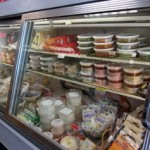
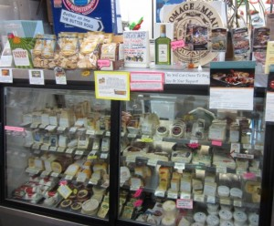
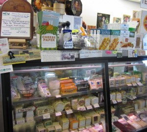

General Grocery
Grocery Items
We have an extensive selection of general grocery items that you would expect from any food store. We do our best to offer premium products at a reasonable price. Some product attributes that we look for include: organic, BPA free, lower sodium or no salt added, sugar-free (natural sugar substitutes), local, vegetarian, and reasonably priced. The categories that we regularly stock include:
- Baking Supplies
- Canned Goods and Condiments
- Cereal
- Crackers and Chips
- Desserts
- Drinks and Juices
- Meals and Side Dishes
- Non-dairy Milks
- Nut Butters and Jams
- Pasta and Sauces
- Soups
- Sugar-free
- Teas and Coffees
Cheese
Eats carries over 100 cheeses from around the world and from just around the corner. We feature cheese made from cow, sheep, and goat milk, providing a selection with tastes for any palate. Our weekly ordering gives us the flexibility to work with customer requests for new selections and offer very competitive prices. Please browse our EURO-USA Product Catalog (please click the catalog name below to view or download) and give us a call to make a customer request or inquire about any of our cheeses.
We are happy to provide custom cuts of cheese between 10 AM and 6:30 PM and offer suggestions for cheeses suitable for your next event. Plus, we rotate our samples regularly, so you can find your new favorite cheese today!
 Meats
Due to customer demand, we have decided to reevaluate the meat selection at EATS. Our new standards for meat include: all meat must be USDA Organic or raised without use of antibiotics, hormones, or chemicals; all animals must be humanely treated, pasture-finished (no feedlots) and raised on a free-range farm; and all fish is wild-caught and sustainably harvested with 3rd party certification. You may notice that some products have been replaced or discontinued; this is because we have found them to be incompatible with these new standards. We wish to provide our customers with healthy protein sources by supporting farmers with strong values in animal husbandry.
If you wish to learn more about the farms and farmers whose products we currrently carry, please ask to see our Eats Meats binder!
Produce
Here at Eats we are positively passionate about our organic produce! We are committed to our customers and our community to find and provide the very best quality organic fruits and vegetables available. Every day we offer a bountiful array of seasonal organic produce—everything from apples to zucchini.
From early spring to late fall we proudly carry as much locally grown produce as our local farms can provide. These New River farms include:
You can visit their websites by clicking the links above.All our growers must meet the strict standards required to be certified organic.
Please come in and browse our lovely organic produce today!